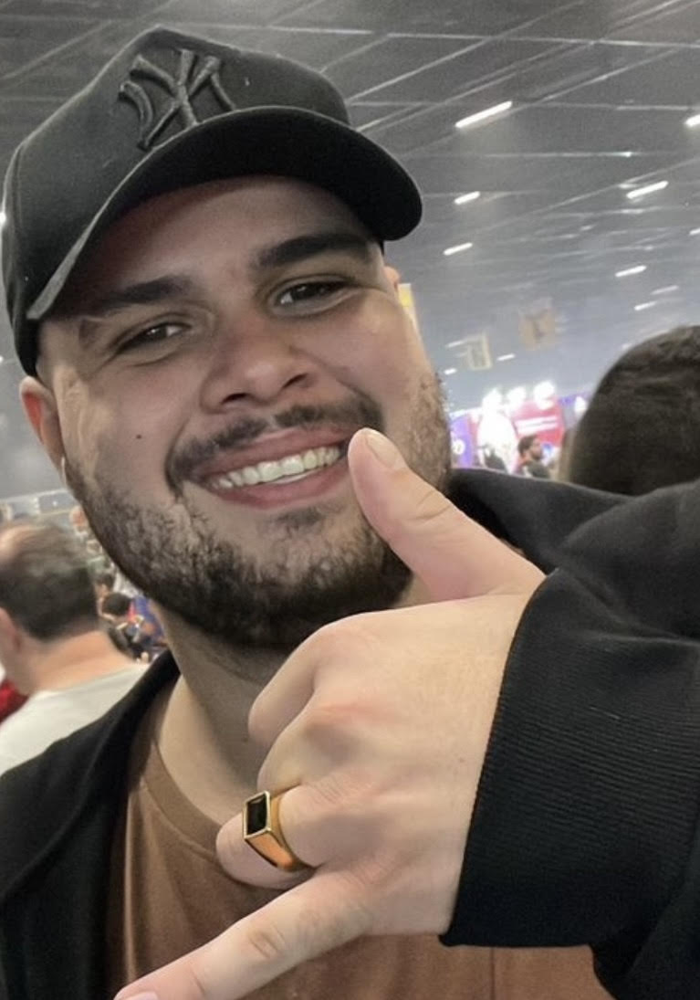
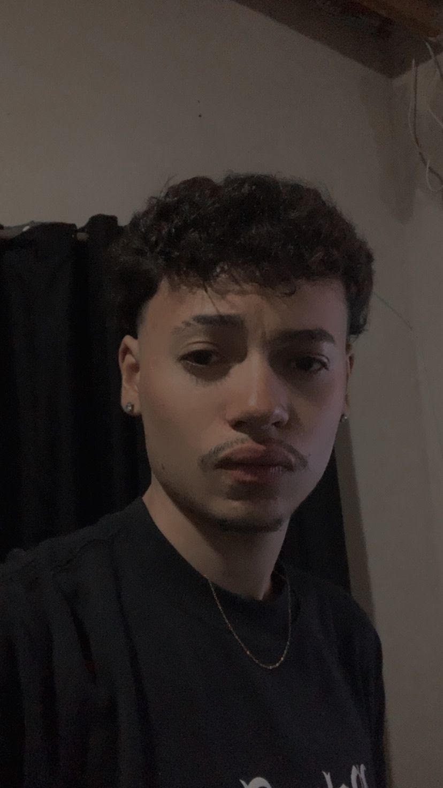
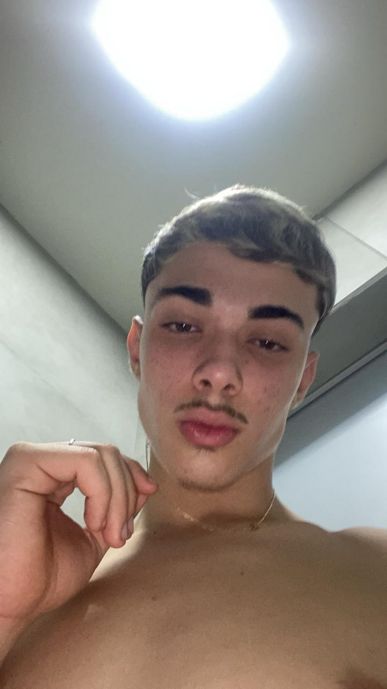
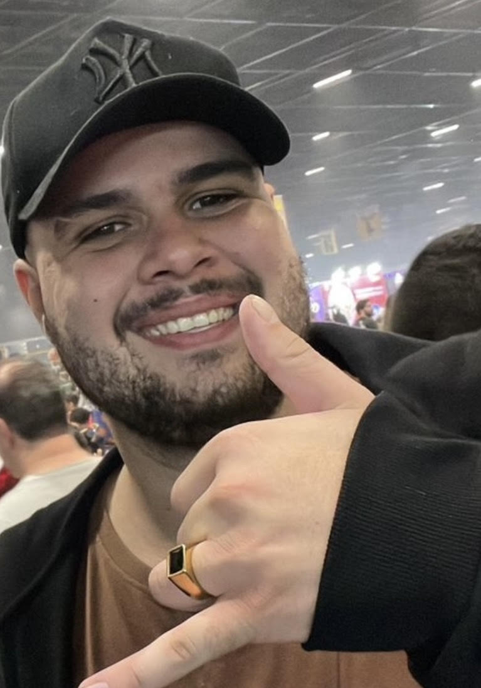
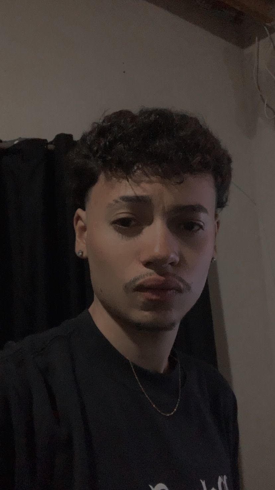
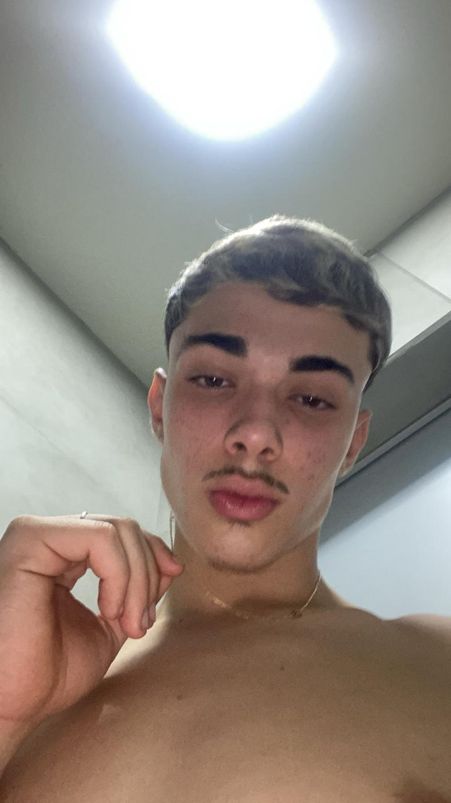

Sobre o Projeto Doe Vida
Este projeto é uma iniciativa acadêmica do primeiro semestre de Análise e Desenvolvimento de Sistemas. Nosso objetivo é criar uma plataforma que facilite a conexão entre doadores de sangue e hemocentros, otimizando o processo de agendamento e gerenciamento de estoque.
 





Informações Complementares
Equipe de Desenvolvimento:
Projeto criado pelo grupo 7 do primeiro semestre do curso de Análise e Desenvolvimento de
Sistemas da Fatec Lins.
Agradecimentos:
Agradecemos aos nossos professores pela mentoria e suporte fundamental para a realização deste
trabalho.